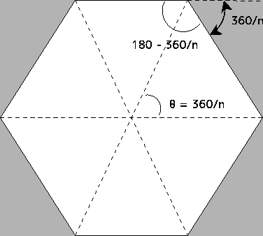
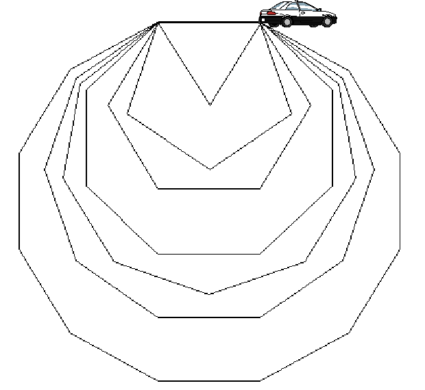

Đang cập nhật...
Hãy xây một pyramid từ các viên đá hình lập phương giống như hình dưới.
Hãy đọc vào số lượng viên đá. Viết chương trình để tính toán số tầng của pyramid có thể xây dược. Số tầng được tính từ trên xuống. Tầng trên cùng là tầng 1, tầng tiếp theo là tầng 2. Số viên đá để xây 1 tầng là 1, để xây 2 tầng là 3.
Kết quả thực hiện:
./coban41
So vien da: 2
Xay duoc 1 tang
Con du 1 vien da
./coban41
So vien da: 6
Xay duoc 3 tang
Con du 0 vien da
./coban41
So vien da: 11
Xay duoc 4 tang
Con du 1 vien da
./coban41
So vien da: -1
Nhap sai!
Đọc vào một số từ bàn phím. Kiểm tra xem số này có phải là số nguyên tố không. Dùng for và break trong chương trình.
Kết quả thực hiện:
./coban42
Nhap so nguyen 1
Nhap so nguyen -1
Nhap so nguyen 2
2 la so nguyen to
./coban42
Nhap so nguyen 10
10 khong phai la so nguyen to
./coban42
Nhap so nguyen 3
3 la so nguyen to
Giả sử chiếc ôtô trò chơi được gắn một cây bút ở phía sau. Vị trí ban đầu của chiếc ôtô như hình 8. Hãy lập trình đường đi cho ôtô để cây bút vẽ ra các đa giác đều, mỗi cạnh 1 mét. Xem ví dụ ở hình 8.
|  |
Giả sử muốn vẽ đa giác đều n cạnh, thì góc mà ôtô cần phải quay sẽ là 360/n. Chẳng hạn, để vẽ hình tam giác đều, ôtô sẽ quay 120 độ theo chiều kim đồng hồ, đi thẳng 1 m, quay 120 độ, đi thẳng 1 m, quay 120 độ, và đi thẳng 1 m.
|  |
./coban43
So canh cua da giac: 4
quay phai 90 do, thang 1 m
quay phai 90 do, thang 1 m
quay phai 90 do, thang 1 m
quay phai 90 do, thang 1 m
./coban43
So canh cua da giac: 3
quay phai 120 do, thang 1 m
quay phai 120 do, thang 1 m
quay phai 120 do, thang 1 m
./coban43
So canh cua da giac: 8
quay phai 45 do, thang 1 m
quay phai 45 do, thang 1 m
quay phai 45 do, thang 1 m
quay phai 45 do, thang 1 m
quay phai 45 do, thang 1 m
quay phai 45 do, thang 1 m
quay phai 45 do, thang 1 m
quay phai 45 do, thang 1 m
./coban43
So canh cua da giac: 0
So canh cua da giac: -1
So canh cua da giac: 12
quay phai 30 do, thang 1 m
quay phai 30 do, thang 1 m
quay phai 30 do, thang 1 m
quay phai 30 do, thang 1 m
quay phai 30 do, thang 1 m
quay phai 30 do, thang 1 m
quay phai 30 do, thang 1 m
quay phai 30 do, thang 1 m
quay phai 30 do, thang 1 m
quay phai 30 do, thang 1 m
quay phai 30 do, thang 1 m
quay phai 30 do, thang 1 m
Hãy đọc vào giá trị cho 1 biến nguyên. Hãy tạo 1 tam giác các kí tự sao * như ở dưới.
./coban44
So nguyen: 0
ko phai so nguyen duong!
./coban44
So nguyen: -3
ko phai so nguyen duong!
./coban44
So nguyen: 4
---*
--***
-*****
*******
./coban44
So nguyen: 9
--------*
-------***
------*****
-----*******
----*********
---***********
--*************
-***************
*****************
Hãy thay đổi chương trình để kết quả đạt được là:
./coban44
So nguyen: 9
*
***
*****
*******
*********
***********
*************
***************
*****************
Hãy vẽ hoa văn như ở dưới, cho biết số dòng đọc vào từ bàn phím là số lẻ không âm.
Kết quả thực hiện:
./nangcao45
Nhap so hang (so le khong am): 2
Nhap so hang (so le khong am): 0
Nhap so hang (so le khong am): 7
*-----*
-*---*-
--*-*--
---*---
--*-*--
-*---*-
*-----*
Hãy hiển thị lịch của 1 tháng nào đó của năm 2015. Ngày đầu tiên của tháng, thứ của ngày đầu tiên của tháng, số ngày của tháng được đọc vào từ bàn phím.
Kết quả thực hiện:
./nangcao46
Ngay 1 cua thang la thu (Sun(1) Mon(2) Tue(3) Wed(4) Thu(5) Fri(6) Sat(7))?: 4
Thang co may ngay (28,29,30,31)?: 31
SUN MON TUE WED THU FRI SAT
1 2 3 4
5 6 7 8 9 10 11
12 13 14 15 16 17 18
19 20 21 22 23 24 25
26 27 28 29 30 31
Tự nâng cao kĩ năng: Sau khi hoàn thành chương trình theo yêu cầu như trên, hãy nâng cấp chương trình để hiển thị lịch của 1 năm nào đó, cho biết thứ của ngày 1/1 đọc vào từ bàn phím.